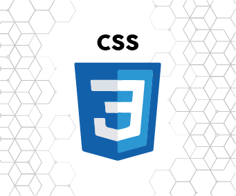

Belajar CSS: Pengertian, Peran, Fungsi, dan Macamnya
Pengertian CSS
Oke pertama-tama saat mulai belajar CSS kamu tentu harus paham betul pengertiannya. Sebenarnya apa itu CSS? CSS adalah singkatan dari Cascading Style Sheets. Jika diterjemahkan ke bahasa Indonesia secara harfiah, CSS berarti “lembar penataan menurun”. Namun secara konteks, Cascading Style Sheets adalah kumpulan perintah yang digunakan untuk menjelaskan tampilan sebuah halaman situs web dalam mark-up language. Mark-up language atau bahasa markah adalah bahasa pemrograman yang biasanya digunakan membuat website.
CSS dan HTML
Lalu, apa hubungannya HTML dengan CSS? Keduanya sangat berhubungan erat. CSS adalah kode-kode yang dipakai untuk mendesain sebuah laman HTML. Jika HTML diibaratkan sebagai seorang manusia, maka CSS adalah pakaian yang membuat penampilan menjadi semakin menarik. CSS akan membantu para web designer untuk mengubah tampilan teks (baik dari bentuk dan ukuran font maupun warnanya), menambahkan gambar, hingga mengubah latar belakang sebuah halaman HTML.
Keberadaan CSS bisa terlihat dengan adanya atribut warna teks. Di sini CSS memberi perintah berupa teks berwarna biru melalui tag <span> dengan atribut class=”warna”. Jadi setiap tag <span> muncul, teks yang mengikutinya akan berwarna biru. Pun demikian saat kamu ingin mengganti warnanya. Tinggal mengganti CSS pada tag <style> dari “blue” ke warna lain, maka teks yang awalnya berwarna biru akan berubah warna.
Setelah memahami hubungan antara CSS dengan HTML, mari lanjutkan belajar CSS ke poin selanjutnya yaitu tentang fungsi.
Belajar CSS lebih mudah dengan mengetahui fungsinya
Sebenarnya untuk fungsi CSS kamu sudah bisa mengetahuinya dari penjelasan sebelumnya. Pada dasarnya, CSS berfungsi untuk mendesain, membentuk, serta mengubah tampilan halaman sebuah website. CSS dapat bekerja dan berlaku melalui tag HTML. Dengan adanya CSS, tag HTML yang sederhana dapat diubah sehingga tampilan laman website pun menjadi terlihat lebih menarik dan efisien.
Cara kerja CSS
Untuk cara kerjanya sendiri kamu bisa melihat pada Gambar 1. CSS beroperasi melalui tag <style> dengan atribut class warna. Dengan adanya CSS pada HTML tersebut maka pengaturan warna teks akan menjadi lebih mudah. Saat kamu ingin mengganti warna teks cukup mengetikkan tag <span> tanpa harus menulis ulang perintah. Jadi bisa disimpulkan bahwa CSS akan menghemat waktumu dengan perintah-perintah yang efisien.
Hal ini bisa terjadi karena CSS sendiri dikembangkan untuk bisa mengubah tampilan laman website tanpa harus mengganti isi konten. Jika kembali pada perumpamaan manusia dan pakaian di poin sebelumnya, dengan CSS kamu tidak mengubah bentuk manusianya tapi hanya mengganti pakaiannya. Dengan begitu untuk mengubah dan memprogram ulang tampilan website pun bisa dilakukan dalam waktu cepat.
Peran CSS
Dari sini kamu bisa menyimpulkan bahwa peran CSS untuk website sangatlah penting. Tanpa adanya CSS, tampilan website akan membosankan atau bahkan membutuhkan waktu lama untuk loading. Bayangkan saja kamu hanya bisa bergantung pada HTML untuk membuat sebuah situs. Bukan cuma tampilan situs akan “hambar”, tapi kamu juga butuh waktu lebih lama karena harus berulang kali mengetikkan perintah.
Keuntungan belajar CSS
Dengan belajar CSS kamu (sebagai seorang web designer) bahkan bisa lebih mudah mengendalikan website. Kamu tidak harus pusing-pusing mengutak-atik HTML saat harus memprogram ulang tampilan laman. Bahkan pada CSS tingkat lanjut, kamu bisa mengatur website lewat medium yang lain seperti suara. Keuntungan lain dari belajar CSS adalah tingkat compatibility yang tinggi. CSS kompatibel dengan kebanyakan browsers dan sangat user-friendly.
Menurut website teknologi informasi Amerika Serikat, Lifewire , menguasai CSS bahkan bisa mendapatkan pemasukan tambahan. Kamu bisa menjadi seorang freelance web designer atau bahkan menjual jasamu pada pihak yang membutuhkan. Terlebih, CSS juga akan melatihmu untuk membuat website yang beragam. Jadi kamu bisa membuat bervariasi website tanpa harus menghabiskan waktu untuk belajar ulang.
Macam-macam CSS
Saat belajar CSS kamu perlu mengetahui bahwa CSS sendiri dibagi menjadi beberapa macam dengan penggunaan yang berbeda-beda. Hal ini dimaksudkan agar kamu mencoba mempraktikkan teori yang sudah dipelajari tidak mengalami kekeliruan. Setidaknya ada tiga macam CSS yang sering digunakan oleh web designer. Berikut penjelasannya.
Inline style sheet
ertama ada inline style sheet. Sederhananya, CSS model ini adalah CSS dengan perintah pemrograman yang letaknya ada pada objek. Misalnya kamu ingin mengubah sebuah tulisan pada laman tertentu di website milikmu, inline style sheet CSS harus menempel pada elemen tulisan tersebut. Kamu cukup menambahkan tag <style> saja untuk menerapkan CSS ini. Contoh penerapannya bisa kamu lihat pada Gambar 1.
External style sheet
Selain inline style sheet ada external style sheet. CSS ini letaknya berbeda dengan laman yang akan diubah. Cara ini lebih praktis daripada inline style sheet karena bisa menghemat ruang dan bisa digunakan berulang-ulang untuk laman web yang berbeda. Kamu bisa mengenali CSS tipe ini lewat tag <link rel>. Tag ini akan menghubungkan halaman coding pada external style sheet CSS yang terpisah.
Embedded style sheet
Terakhir ada embedded style sheet. CSS model ini sama seperti inline style sheet, sama-sama berada pada satu laman coding. Maka tidak mengherankan jika embedded style sheet terkadang disebut dengan internal style sheet. Biasanya CSS ini diapit oleh tag <head> </head> dan diawali dengan tag <style>. Embedded style sheet sering digunakan untuk mengatur laman web dengan tampilan yang unik. Misalnya dalam satu paragraf tulisan ada kalimat yang berbeda dan hal tersebut terus berulang.
Sampai di bagian ini kamu bisa menyimpulkan bahawa CSS punya andil yang besar dalam pembuatan website. Tanpa adanya CSS tanpilan halaman web akan terlihat membosankan. Dari sisi web designer sendiri, CSS akan membantu mereka untuk menghemat waktu karena tidak harus lagi mengetikkan perintah yang sama. Semoga uraian di atas bisa membantu kamu menjadi web developer yang profesional. Selamat belajar CSS!